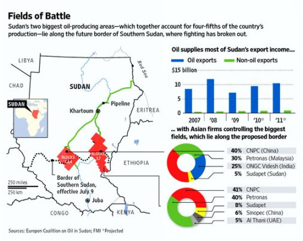
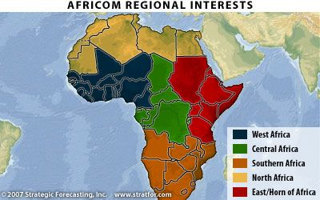
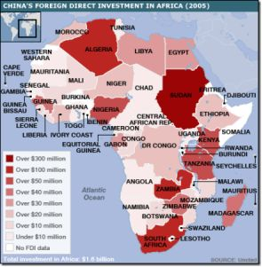
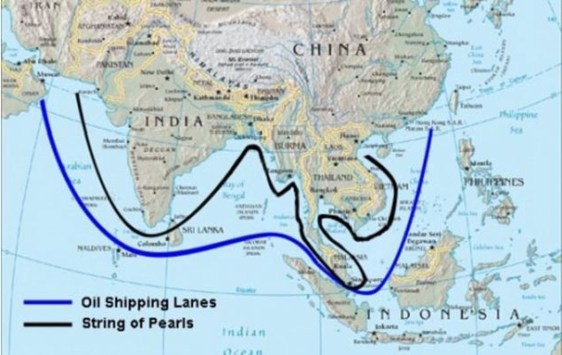
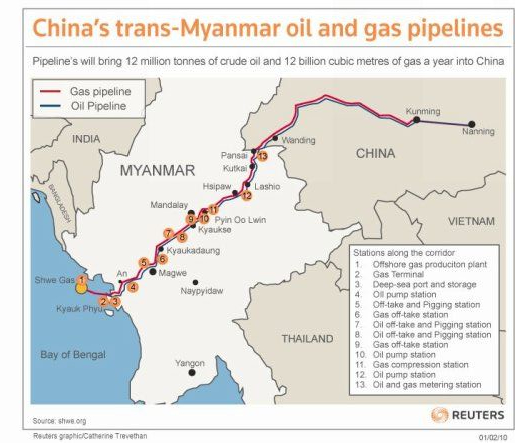
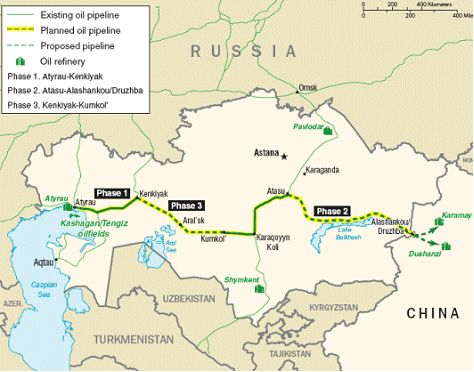
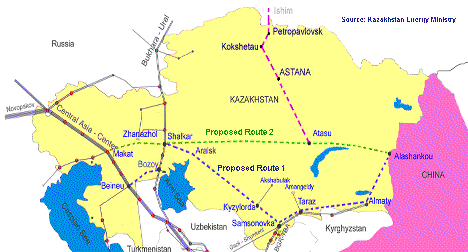

Chapter Two:
Energy Wars: The War to Control China’s Oil
“West Africa’s oil has become of national strategic interest to us,” stated US Assistant Secretary of State for Africa Walter Kansteiner in 2002. Darfur and Chad were but an extension of the US Iraq policy to control China’s oil sources “with other means” – control of oil everywhere. China was challenging that control “everywhere,” especially in Africa. Darfur was the beginning of the Pentagon’s undeclared new Cold War, this one over oil.
China’s energy Achilles heel
In 1994 China passed from being an exporter of oil to the world to becoming a net oil importer. The shift was to have profound implications for China’s national security and her vulnerability to Anglo-American attempts to control her oil sources. By 2010 China had 90 times more cars than in 1990, and projections show that by 2030 or even sooner, China could surpass the US in the total number of cars. That, as well as demands for petroleum for the petrochemical industry, and for air and truck transport, have rapidly made securing adequate oil supplies a national security priority.
Beginning in 1999, China’s major investments in oil extraction in Sudan began to sound alarm bells in Washington. Construction of a 900-mile long pipeline to carry oil from fields in southern Sudan to Port Sudan on the Red Sea, where it was loaded onto tankers bound for China, was not viewed favorably by certain powerful circles in the United States or the UK. When China then discovered a major new potential oilfield in Sudan’s southwest Darfur Province, it was time to begin to draw the noose around the neck of Sudan.
In April 2005, Sudan Energy Minister Awad al-Jaz told reporters in Khartoum that an oil field had been found in southern Darfur, and it was expected to produce 500,000 barrels of oil per day within weeks. It was estimated by international geologists to be part of a huge complex of oil fields in a basin that went from Darfur into neighboring Chad and on to Cameroon, perhaps one of the world’s largest oil discoveries outside Saudi Arabia.[15]
Almost immediately, gangs of militia swept across the unmarked desert border from Chad, armed and aided by Western intelligence services and spreading murder, rape and chaos in the region. Washington had begun its Operation “Darfur Genocide.” The ultimate aim was to provide an excuse to bring NATO troops into one of China’s most promising new oil regions.
African oil diplomacy
Beijing launched a major new diplomatic initiative with most African states soon after the Darfur oil discovery, one designed to secure long-term raw materials sources from one of the planet’s most endowed regions – the African continent. No raw material had higher priority in Beijing than oil. China’s goal was the securing of long-term oil sources.
In 2006 China drew an estimated 30% of its crude oil from Africa. That explained a series of diplomatic initiatives which have left Washington furious. China used no-strings-attached dollar credits to gain access to Africa’s vast raw material wealth, leaving Washington’s typical control game via the World Bank and IMF out in the cold. Who needs the painful medicine of the IMF, when China gives easy terms and builds roads and schools to boot?
In November 2006, Beijing hosted an extraordinary summit of 40 African heads of state. China literally rolled out the red carpet for the leaders of Algeria, Nigeria, Mali, Angola, Central African Republic, Zambia, South Africa and Sudan, among others.
China signed an oil deal linking the Peoples’ Republic of China with the continent’s two largest nations – Nigeria and South Africa. China’s CNOC would lift the oil in Nigeria via a consortium that included South African Petroleum Co., giving China access to what could be 175,000 barrels a day by 2008. The $2.27 billion deal gave state-controlled CNOC a 45% stake in a large off-shore Nigerian oil field. Previously, Nigeria had been considered in Washington to be an asset of the Anglo-American oil majors, ExxonMobil, Shell and Chevron.
China was generous in dispensing its soft loans, with zero interest or even outright grants to some of the poorest debtor states of Africa. The funds went to infrastructure, including highways, hospitals, and schools, a stark contrast to the brutal austerity demands of the IMF and World Bank. In 2006 China committed more than $8 billion to Nigeria, Angola and Mozambique, versus $2.3 billion to all sub-Saharan Africa from the US-controlled World Bank. Ghana was negotiating a $1.2 billion Chinese electrification loan. Unlike the World Bank, a de facto arm of US foreign economic policy, China shrewdly attached no strings to its loans.
The oil-related Chinese diplomacy led to the bizarre accusation from Washington that Beijing was trying to “secure oil at the sources,” something Washington foreign policy had itself been doing intensively all across the globe for at least a century.[16]
Beijing’s China National Petroleum Company, CNPC, became Sudan’s largest foreign investor, with some $5 billion in oil field development. Since 1999 China has invested at least $15 billion in Sudan. It owns 50% of an oil refinery near Khartoum with the Sudanese government. The oil fields were concentrated in the south, site of a long-simmering civil war, partly financed covertly by the United States, to break the south from the Islamic Khartoum-centered north.
CNPC built an oil pipeline from its concession blocks 1, 2 and 4 in southern Sudan to a new terminal at Port Sudan on the Red Sea, where oil is loaded on tankers for China. In 2005, Sudan was China’s fourth largest foreign oil source. By 2006 eight percent of China’s oil came from southern Sudan.
In 2006 China surpassed Japan to become the world’s second largest importer of oil after the United States, importing 6.5 million barrels a day of the black gold. China took from 65% to 80% of Sudan’s 500,000 barrels/day of oil production. With its oil demand growing by an estimated 30% a year, China was expected to pass the US in oil import demand in a few years, according to USAID. That reality was the motor driving Chinese foreign policy in Africa.
China’s CNPC held rights to block 6 – the only oil exploration area located entirely in North Sudan. Block 6 straddles Darfur, near the border to Chad and the Central African Republic. In April 2005 Sudan’s government announced it had found oil in South Darfur, a major geopolitical event which major US and European media “forgot” to mention when discussing the sudden new “Darfur conflict.”
Washington, using US Secretary of State Colin Powell, an African-American, to deliver the message, began accusing the Khartoum regime of “genocide” in Darfur, though no independent proof was given. Only Washington and the NGO’s close to it used the term “genocide” to describe Darfur. If they could get a popular acceptance of the charge of genocide, it opened the possibility for drastic “regime change” interventions by NATO and by Washington in Sudan’s sovereign affairs. The Washington Darfur smear campaign soon enlisted Hollywood stars like George Clooney in this effort. Washington and NATO launched a campaign to argue for a de facto NATO occupation of the region.
In an interview in November 2006, US Assistant Secretary of State Ellen Sauerbrey, head of the Bureau of Population, Refugees and Migration, said during a USINFO online interview: “The ongoing genocide in Darfur, Sudan – a ‘gross violation’ of human rights – is among the top international issues of concern to the United States.” The Bush-Cheney administration insisted that genocide had been going on in Darfur since 2003. However, a UN mission, with a five-man panel led by Italian judge Antonio Cassese, reported in 2005 that genocide had not occurred in Darfur, but that some very grave human rights abuses were committed.[17]
The United States, acting through surrogate allies in Chad and neighboring states, trained and armed the Sudan Peoples’ Liberation Army, headed until his death in July 2005 by John Garang, trained at the US Special Forces school in Fort Benning, Georgia. Washington poured arms first into south-eastern Sudan, and following the discovery of oil in Darfur in the southwest, into that region as well. Washington thus fuelled the conflict that led to tens of thousands dying and several million driven to flee their homes. Eritrea hosted and supported the SPLA (Sudanese Peoples’ Liberation Army), the umbrella NDA (National Democratic Alliance) opposition group, and the Eastern Front and Darfur rebels.
There were two rebel groups fighting in Sudan’s Darfur region against the Khartoum central government of President Omar al-Bashir: the Justice for Equality Movement (JEM), and the larger Sudan Liberation Army (SLA). In February 2003 the SLA launched attacks on Sudanese government positions in the Darfur region. SLA Secretary-General Minni Arkou Minnawi called for armed struggle, accusing the government of ignoring Darfur. “The objective of the SLA is to create a united democratic Sudan.” In other words, regime change in Sudan.[18]
The US Senate adopted a resolution in February 2006 that requested North Atlantic Treaty Organization troops in Darfur, as well as a stronger UN “peacekeeping” force with a robust mandate. A month later, President Bush also called for additional NATO forces in Darfur. The aim was for NATO to gain control over China’s huge new oil potential.
The Pentagon was busy providing training for African military officers in the US, much as it had for Latin American officers for decades. The International Military Education and Training (IMET) program had trained military officers from Chad, Ethiopia, Eritrea, Cameroon and the Central African Republic, in effect every country on Sudan’s border. Much of the military equipment and arms that fuelled the killing in Darfur and the south were brought in via murky, protected private “merchants of death” such as Victor Bout, a notorious former KGB operative, now with offices in the US.
USAID development aid for all of Sub-Saharan Africa, including Chad, had been cut sharply in recent years, while its military aid rose as sharply.
Secretary of State Condoleezza Rice’s Chevron Oil Co. was in neighboring Chad, together with the other US oil giant, ExxonMobil. They had built a $3.7 billion oil pipeline carrying 160,000 barrels/day of oil from Doba in central Chad, near Darfur, via Cameroon to Kribi on the Atlantic Ocean, destined for US refineries.
To accomplish this, they worked with Chad’s “President for life,” Idriss Deby, a corrupt despot who had been accused of feeding US-supplied arms to the Darfur rebels. Deby joined Washington’s Pan Sahel Initiative run by the Pentagon’s US-European Command, to train his troops to fight “Islamic terrorism.” The majority of the tribes in Darfur region are Muslim.
Supplied with US military aid, training and weapons, in 2004 Deby launched the initial strike that set off the conflict in Darfur, using members of his elite Presidential Guard who originate from the province. He provided all-terrain vehicles, arms and anti-aircraft guns to Darfur rebels fighting the Khartoum government in southwest Sudan. The US military support to Deby was the trigger for the Darfur bloodbath. Khartoum reacted and the ensuing tragic debacle was unleashed in full force.[19]
Washington-backed NGO’s and the US Government had begun the “Darfur genocide” campaign in 2003, at the same time the Chad-Cameroon pipeline oil began to flow. The US now had a base in Chad to go after Darfur oil and, potentially, co-opt China’s new oil sources. Darfur was strategically located, straddling Chad, Central African Republic, Egypt and Libya.
According to Africa researcher Keith Harmon Snow: “US military objectives in Darfur – and the Horn of Africa more widely – are being served at present by the US and NATO backing of the African Union troops in Darfur. There, NATO provides ground and air support for AU troops who are categorized as ‘neutral’ and ‘peacekeepers.’ Sudan is at war on three fronts, each country – Uganda, Chad, and Ethiopia – with a significant US military presence and ongoing US military programs. The war in Sudan involves both US covert operations and US trained “rebel” factions coming in from South Sudan, Chad, Ethiopia and Uganda.”[20]
Beijing responded with diplomatic counter-efforts in Chad and around Africa. In January 2007 Chinese President Hu Jintao made a state visit to Sudan and to Cameroon, among other African states. In 2006, China’s leaders visited no less than 48 African states. In August 2006 Beijing had hosted Chad’s Foreign Minister for talks and resumption of formal diplomatic ties that had been cut in 1997. China began to import oil from Chad as well as Sudan. Chad’s Foreign Minister announced that talks with China over greater China participation in Chad’s oil development were “progressing well.” He referred to the terms the Chinese seek for oil development, calling them, “much more equal partnerships than those we are used to having.”[21]
The Chinese economic presence in Chad, ironically, was more effective in calming the fighting and displacement of refugees in Darfur than any African Union or UN troop presence ever could. That was not welcome for some people in Washington and at Chevron headquarters.
New Cold War over oil
George W. Bush’s interest in Africa included a new US base in Sao Tomé and Principe, 124 miles off the Gulf of Guinea, from which it can control the Gulf of Guinea oilfields from Angola in the south to Congo, Gabon, Equitorial Guinea, Cameroon and Nigeria. Those just happened to be the very same areas where recent Chinese diplomatic and investment activities have focused.
“West Africa’s oil has become of national strategic interest to us,” stated US Assistant Secretary of State for Africa Walter Kansteiner in 2002.[22] Darfur and Chad were but an extension of the US Iraq policy to control China’s oil sources “with other means” – to control the oil everywhere. And China was challenging that control “everywhere,” especially in Africa. Darfur was the beginning of the Pentagon’s new undeclared Cold War, this one over oil.
In 2011 a new “republic” was declared in southern Sudan titled The Republic of South Sudan. It (conveniently for the Pentagon) controlled a major part of Sudan’s oil flows to China. Washington covert aid and actions were behind the new state, although the US was careful not to be the first to diplomatically recognize it. The agenda began to become clear in January 2012, when the new state announced it was closing its entire oil facility, after failing to reach an agreement with the Sudan government on oil revenues. At the same time South Sudan’s Information Minister Barnaba Marial Benjamin announced that South Sudan and Kenya had signed a memorandum of understanding to build an oil pipeline to the Kenyan port of Lamu. Construction of the pipeline will begin “as soon as sources of funding are made available,” which should take about a month, he said, reckoning that the pipeline could be completed in 10 months.[23]
Kenya was a major military bastion of the newly-created US Africa Command, AFRICOM. By routing the oil via pipeline through Kenya and not Sudan, Washington would gain a major control lever over a major source of China’s oil. It was just one of many such moves that would occur after China’s 2006 Africa diplomatic offensive. The border of South Sudan conveniently cut Sudan’s oil fields down the middle in a disputed territory, and more than 350,000 barrels of oil destined for mainly Chinese ports was cut. This comprised some 90% of all Sudanese oil production. South Sudan also bordered the new oil areas of Darfur, potentially giving whoever controlled South Sudan the ability to sabotage Chinese oil infrastructure there, as well. Darfur itself was under a UN-African Union protectorate. The Sudan government accused the head of the UN Darfur mission, UNAMID, a Briton named Tony Prena, and his “peacekeepers” of using “humanitarian” convoys across Darfur as the main source of supplies and weapons for the rebel groups against the Khartoum central government.[24]
The US AFRICOM military and USAID forces were drawing a tight noose around the keystone to China’s brilliant Africa oil strategy.
Creating AFRICOM to stop China
The covert target of US “surrogate warfare” in Africa today is China, which is the real threat to US control of Central Africa’s vast mineral riches. The Democratic Republic of Congo was renamed from the Republic of Zaire in 1997, when the forces of Laurent-Désiré Kabila brought Mobutu’s 32-year reign to an end. Locals call the country Congo-Kinshasa, in distinction to the smaller republic of Congo-Brazzaville.
The Kivu region has some of the world’s greatest strategic reserves of minerals. The eastern border straddles Rwanda and Uganda, on the eastern edge of the Great African Rift Valley, believed by geologists to be one of the richest repositories of minerals on the face of the earth.
The Democratic Republic of Congo contains more than half the world’s cobalt. It holds one-third of its diamonds, and, extremely significantly, fully three-quarters of the world resources of columbite-tantalite or “coltan” – a primary component of computer microchips and circuit boards, essential for mobile telephones, laptops and other modern electronic devices. And it is believed to hold huge oil riches.
America Minerals Fields, Inc., a company heavily involved in promoting the 1996 accession to power of Laurent Kabila, was, at the time of its involvement in the Congo’s civil war, headquartered in Hope, Arkansas, an area where the Clinton family mafia is based. Major stockholders included long-time associates of former President Clinton going back to his days as Governor of Arkansas. From his base in Goma, Eastern Zaire, Kabila had renegotiated the mining contracts with several US and British mining companies, including American Mineral Fields, several months before the downfall of Zaire’s French-backed dictator Mobutu. The US-directed International Monetary Fund then helped bring Mobutu’s corrupt rule to a bloody end.
Washington was not entirely comfortable with Laurent Kabila, who was finally assassinated in 2001. In a study released in April 1997, barely a month before President Mobutu Sese Seko fled the country, the IMF had recommended “halting currency issue completely and abruptly” as part of an “economic recovery” program. A few months later, the IMF ordered the new government of Laurent Kabila Desire to freeze civil service wages with a view to “restoring macro-economic stability.” Eroded by hyperinflation, the average public sector wage had fallen to 30,000 New Zaires (NZ) a month, the equivalent of one US dollar.
According to Canadian researcher and economist Michel Chossudovsky, the IMF’s demands were tantamount to maintaining the entire population in abysmal poverty. They precluded from the outset a meaningful post-war economic reconstruction, thereby continuing to fuel the Congolese civil war, in which close to 2 million people have died.
Laurent Kabila was succeeded by his son, Joseph Kabila, who went on to become the Congo’s first democratically elected President, and appears to have held a closer eye to the welfare of his countrymen than did his father.
Since the Bush-Cheney Administration signed the directive creating it in February 2007, AFRICOM has been a direct response to China’s successful African oil diplomacy. It defines its mission as follows: “Africa Command has administrative responsibility for US military support to US government policy in Africa, to include military-to-military relationships with 53 African nations.” They openly admit to working intimately with US Embassies and the State Department across Africa, which would also include USAID: “US Africa Command provides personnel and logistical support to State Department-funded activities. Command personnel work closely with US embassies in Africa to coordinate training programs to improve African nations’ security capacity.”[25]
Speaking to the International Peace Operations Association in Washington, D.C. on Oct. 27, 2008, AFRICOM commander Gen. Kip Ward defined the command’s mission thus: “In concert with other US government agencies and international partners, [to conduct] sustained security engagements through military-to-military programs, military-sponsored activities, and other military operations as directed to promote a stable and secure African environment in support of US foreign policy.”[26]
Clearly, the “military operations as directed to promote a stable and secure African environment in support of US foreign policy,” are aimed squarely at blocking China’s growing economic presence in the region.
In fact, as various Washington sources state openly, AFRICOM was created to counter the growing efforts of China in Africa, including the Democratic Republic of Congo, to secure long-term economic agreements for African raw materials, in exchange for Chinese aid, production-sharing agreements and royalties. As noted, the Chinese approach has been far shrewder. Rather than offering only savage IMF-dictated austerity and economic chaos, China has been offering extensive credit, and soft loans to build roads and schools, in order to generate good will.
Dr. J. Peter Pham, a leading Washington insider who is an advisor of the US State and Defense Departments, stated openly that among the aims of the new AFRICOM, was the objective of “protecting access to hydrocarbons and other strategic resources which Africa has in abundance ... a task which includes ensuring against the vulnerability of those natural riches and ensuring that no other interested third parties, such as China, India, Japan, or Russia, obtain monopolies or preferential treatment.”
In testimony before the US Congress supporting the creation of AFRICOM in 2007, Dr. Pham, who is closely associated with the neo-conservative Foundation for Defense of Democracies, stated:
This natural wealth makes Africa an inviting target for the attentions of the People’s Republic of China, whose dynamic economy, averaging 9 percent growth per annum over the last two decades, has an almost insatiable thirst for oil as well as a need for other natural resources to sustain it. China is currently importing approximately 2.6 million barrels of crude per day, about half of its consumption; more than 765,000 of those barrels – roughly a third of its imports – come from African sources, especially Sudan, Angola, and Congo (Brazzaville). Is it any wonder, then, that… perhaps no other foreign region rivals Africa as the object of Beijing’s sustained strategic interest in recent years. Last year the Chinese regime published the first ever official white paper elaborating the bases of its policy toward Africa...
Intentionally or not, many analysts expect that Africa – especially the states along its oil-rich western coastline – will increasingly become a theatre for strategic competition between the United States and its only real near-peer competitor on the global stage, China, as both countries seek to expand their influence and secure access to resources.[27]
In 2008, ahead of a twelve-day eight-nation tour of Africa – the third such journey since he took office in 2003 – Chinese President Hu Jintao announced a three-year, $3 billion program in preferential loans and expanded aid for Africa. These funds came on top of the $3 billion in loans and $2 billion in export credits that Hu announced in October 2006, at the opening of the historic Beijing summit of the Forum on China-Africa Cooperation (FOCAC). The Forum brought nearly fifty African heads of state and ministers to the Chinese capital. Making AFRICOM operational as soon as possible was an urgent geopolitical priority for Washington. AFRICOM began operations on October 1, 2008, from headquarters in Stuttgart, Germany.
In late October, 2008, only four weeks after creation of AFRICOM, the well-armed troops of Laurent Nkunda, a renegade Congolese general and warlord, surrounded Goma in North Kivu and demanded that Congo President Joseph Kabila negotiate with him. Among rebel leader Nkunda’s demands was that Kabila cancel a $9 billion joint venture between the Congo and China, called Sicomines, signed in 2007. China was to acquire rights to the vast copper and cobalt resources of the region, in exchange for $6 billion worth of road construction, two hydroelectric dams, hospitals, schools and railway links to southern Africa, to Katanga and to the Congolese Atlantic port at Matadi. The other $3 billion was to be invested by China in development of new mining areas.[28] The aim was becoming clear to Beijing. The Sicomines project has been blocked blocked for years by the IMF and the World Bank,[29] although China’s Ex-Im is still working on the deal.[30]
Libya and China oil
In October 2007, China’s state oil giant CNPC signed a contract to build a refinery jointly with Chad’s government. Two years later in 2009 they began construction of an oil pipeline to carry oil from a new Chinese field in the south some 300 kilometers to the refinery. Western-supported NGOs predictably began howling about environmental impacts of the Chinese oil pipeline. The same NGOs were curiously silent when Chevron struck oil in 2003 in Chad.
In July 2011 Chad and China celebrated opening of the joint venture oil refinery near Chad’s capital of Ndjamena.[31] China’s oil activities in Chad are in very close proximity to another major Chinese oil project in what then was Sudan’s Darfur region bordering Chad.
According to geological estimates, the subsurface running from Darfur, in what was southern Sudan, through Chad into Cameroon, is one gigantic oil field. Its dimensions are perhaps equivalent to a new Saudi Arabia. Controlling southern Sudan as well as Chad and Cameroon is vital to the Pentagon strategy of “strategic denial” of China’s future oil flows.
The next domino to fall in the war against Chinese oil security was Libya’s Gaddafi, ironically aided by a Chinese government decision not to use its UN Security Council veto against the NATO “no-fly zone” bombing of Tripoli and all Libya.
So long as a stable and robust Gaddafi regime remained in power in Tripoli, control over the great African oil field remained a major problem for the US. The simultaneous splitting off of the Republic of South Sudan from Khartoum, and the toppling of Gaddafi in favor of weak rebel bands beholden to US support, were strategic priorities for the Pentagon’s doctrine of Full Spectrum Dominance. AFRICOM has been the key force behind the recent wave of Western military attacks against Libya, and more covert regime changes such as those in Tunisia, Egypt and the fateful referendum in southern Sudan, which has now made that oil-rich region “independent.”
If we take a careful look at a map of Africa and also look at the organization of the new Pentagon Africa Command – AFRICOM – the pattern that emerges constitutes a careful strategy of controlling one of China’s most strategically important sources of oil and raw materials.
Source: Strategic Forecasting Inc.
NATO’s Libya campaign was and is all about oil. However, it is not about simply controlling Libyan high-grade crude because the USA is nervous about reliable foreign supplies. It is about controlling China’s free access to long-term oil imports from Africa and from the Middle East. In other words, it is about controlling China itself.
Geographically Libya is bounded on its north by the Mediterranean directly across from Italy, where Italian ENI oil company has been the largest foreign operator in Libya for years. To its west it is bounded by Tunisia and Algeria. To its south it is bounded by Chad. To its east it is bounded by both Sudan (today Sudan and Southern Sudan) and by Egypt. That location reveals the strategic importance of Libya from the standpoint of the Pentagon-AFRICOM long-term strategy for controlling Africa, its resources, and which country is able to get those resources.
Gaddafi’s Libya had maintained strict national state control over the rich reserves of high quality “light, sweet” Libyan crude oil. As of 2006, Libya had the largest proven oil reserves in Africa, some 35%, larger even than Nigeria.
Oil concessions had been extended to Chinese state oil companies as well as Russian and others in recent years.
Not surprisingly, a spokesman from the so-called opposition claiming victory over Gaddafi, Abdeljalil Mayouf, information manager at Libyan rebel oil firm AGOCO, told Reuters, “We don’t have a problem with Western countries like the Italians, French and UK companies. But we may have some political issues with Russia, China and Brazil.”[32] China, Russia and Brazil pressed for a negotiated settlement of the internal conflict and an end to NATO bombing.
It was no coincidence that the civil war in Sudan began in the oil-rich region of Darfur, while the insurrection in Libya started in the oil-rich eastern province of Cyrenaica. Few outside Beijing saw the connection. Yet Africa was only one theater of the global battlefield to control China’s oil security. As then US Secretary of State Henry Kissinger is reported to have said during the 1970’s, when he was arguably more powerful than the President of the United States, “If you control the oil, you control entire nations or groups of nations.”
The Pentagon began quietly militarizing the key oil “choke points,” those few very narrow water passages through which oil supertankers must pass as they bring oil from the Persian Gulf or Africa to China.
The world has seen a steady escalation of US military involvement in Yemen, a dismally poor land adjacent to Saudi Arabia on its north, the Red Sea on its west, the Gulf of Aden on its south, opening to the Arabian Sea, and overlooking another desolate land that has been in the headlines of late, Somalia. The Pentagon and US intelligence began moving to militarize another strategic chokepoint for the world’s oil flows, Bab el-Mandab. By using the Somalia piracy incidents, together with claims of a new Al Qaeda threat arising from Yemen, the US aimed to militarize one of the world’s most important oil transport routes. In addition, undeveloped petroleum reserves in the territory between Yemen and Saudi Arabia are reportedly among the world’s largest.[33]
The intense destabilization of Yemen began with a sensational and quite fake arrest on December 25, 2009 by US authorities of a Nigerian named Abdulmutallab, who allegedly smuggled high explosives in his underwear aboard a Northwest Airlines flight from Amsterdam to Detroit. He was charged with having tried to blow up the plane with smuggled explosives. Following the arrest, reports were broadcast from CNN, the New York Times and other sources that he was “suspected” of having been trained in Yemen for his terror mission. He reportedly claimed he was sent on his mission by a new organization known as “Al Qaeda in the Arabian Peninsula” (AQAP), based in Yemen. That conveniently turned the world’s attention on Yemen as a new center of the alleged Al Qaeda terror organization. In this way, the forgotten, dirt-poor state of Yemen became the latest target for the US “War on Terror.”
Basic Yemeni geopolitics[34]
In early 2009 the chess pieces on the Yemeni board began to move. Tariq al-Fadhli, a former jihadist leader originally from South Yemen, broke a 15-year alliance with the Yemeni government of President Ali Abdullah Saleh, and announced he was joining the broad-based opposition coalition known as the Southern Movement (SM). Al-Fadhli had been a member of the Mujahideen movement in Afghanistan in the late 1980’s where he was trained by the CIA, along with a then-unknown wealthy Saudi of Yemeni extraction, named Osama bin Laden. In fact several commentators have claimed that the real headquarters of “Al Qaeda” is at CIA headquarters in Langley, Virginia in the USA. Al-Fadhli’s break with the Yemeni dictatorship gave new power to the Southern Movement (SM).
Yemen itself is a synthetic amalgam created after the collapse of the Soviet Union in 1990, when the southern Peoples’ Democratic Republic of Yemen (PDRY) lost its main foreign sponsor. Unification of the northern Yemen Arab Republic and the southern PDRY state led to a short-lived optimism that ended in a brief civil war in 1994, as southern army factions organized a revolt against what they saw as the corrupt crony state rule of northern President Ali Abdullah Saleh. President Saleh began his autocratic rule of Yemen in 1978, first as President of North Yemen (the Yemen Arab Republic) and after 1990 as President of the unified Yemen.
During the 2011 “Arab Spring” he was badly injured in an assassination attempt, when the mosque he attended was bombed. He agreed to step down under pressure from Saudi Arabia and the Gulf Coordination Council in February 2012.
Before 1990, Washington and the Saudi Kingdom backed and supported Saleh and his policy of Islamization, as a bid to contain the communist south. Later, Saleh relied on a strong Salafist-jihadi movement to retain a one-man dictatorial rule. When al-Fadhli broke with Saleh and joined his former socialist foes in the southern opposition group, it marked a major setback for Saleh.
Soon after al-Fadhli joined the Southern Movement coalition, on April 28, 2009, protests in the southern Yemeni provinces of Lahj, Dalea and Hadramout intensified. There were demonstrations by tens of thousands of dismissed military personnel and civil servants demanding better pay and benefits, demonstrations that had been taking place in growing numbers since 2006.
Complicating the picture in Yemen – which some call a “failed state” – Saleh faced a rebellion in the north by the Shi’ite al-Houthi Zaydi clan. On September 11, 2009, in an Al-Jazeera TV interview, Saleh accused Iraq’s Shi’ite opposition leader, Muqtada al-Sadr, and also Iran, of backing the north Yemen Shi’ite Houthist. He declared, “We cannot accuse the Iranian official side, but the Iranians are contacting us, saying that they are prepared for a mediation. This means that the Iranians have contacts with them [the Houthists], given that they want to mediate between the Yemeni government and them. Also, Muqtada al-Sadr in al-Najaf in Iraq is asking that he be accepted as a mediator. This means they have a link.”[35]
Yemen authorities claim they have seized caches of weapons made in Iran, while the Houthists claim to have captured Yemeni equipment with Saudi Arabian markings, accusing Sana’a (the capital of Yemen and site of the US Embassy) of acting as a Saudi proxy. Iran has rejected claims that Iranian weapons were found in north Yemen, calling claims of support to the rebels “baseless.”[36]
Some 70% of Yemen’s revenues derive from its oil sales. The central government of Saleh sits in former North Yemen in Sana’a, while the oil is in former South Yemen. Yet Saleh controls the oil revenue flows. Lack of oil revenue has made Saleh’s usual option of buying off opposition groups all but impossible.
Into this chaotic domestic picture comes the January 2009 announcement, prominently featured on select Internet websites, that Al Qaeda, the alleged global terrorist organization created by the late CIA-trained Saudi, Osama bin Laden, has opened a major new branch in Yemen for both Yemen and Saudi operations.
Al Qaeda in Yemen released a statement through online jihadist forums Jan. 20, 2009 from the group’s leader Nasir al-Wahayshi, announcing formation of a single al Qaeda group for the Arabian Peninsula under his command. According to al-Wahayshi, the new group, al Qaeda in the Arabian Peninsula, would consist of his former Al Qaeda in Yemen, as well as members of the defunct Saudi Al Qaeda group. The press release claimed, interestingly enough, that a Saudi national, a former Guantanamo detainee (Number 372), Abu-Sayyaf al-Shihri, would serve as al-Wahayshi’s deputy.
Days later an online video from al-Wahayshi appeared under the alarming title, “We Start from Here and We Will Meet at al-Aqsa.” Al-Aqsa refers to the al-Aqsa Mosque in Jerusalem that Jews know as Temple Mount, the site of the destroyed Temple of Solomon, which Muslims call Al Haram Al Sharif. The video threatens Muslim leaders – including Yemeni’s President Saleh, the Saudi royal family, and Egyptian President Mubarak – and promises to take the jihad from Yemen to Israel to “liberate” Muslim holy sites and Gaza, something that would likely detonate World War III if anyone were mad enough to do it.
Also in that video, in addition to former Guantanamo inmate al-Shihri, is a statement from Abu-al-Harith Muhammad al-Awfi, identified as a field commander in the video, and allegedly former Guantanamo detainee 333. As it is well-established that torture methods are worthless for obtaining truthful confessions, some have speculated that the real goal of CIA and Pentagon interrogators at Guantanamo prison since September 2001, has been to use brutal techniques to train or recruit sleeper terrorists who can be activated on command by US intelligence, a charge difficult to prove or disprove. The presence of two such high-ranking Guantanamo graduates in the new Yemen-based Al Qaeda, however, is certainly grounds for questioning.
The curious emergence of a tiny but well-publicized al Qaeda in southern Yemen amid what observers call the Southern Movement, a broad-based and popular front that eschews the radical global agenda of al Qaeda, gave the Pentagon a kind of casus belli to escalate US military operations in the strategic region.
After declaring that the Yemen internal strife was Yemen’s own affair, President Obama ordered air strikes against Yemen. The Pentagon claimed its attacks on December 17 and 24, 2009 killed three key al Qaeda leaders, but no evidence has yet proven this. Nonetheless the Christmas Day Detroit bomber drama gave new life to Washington’s “War on Terror” campaign in Yemen. Obama has now offered military assistance to the Saleh Yemen government.
As if on cue, at the same time CNN headlines broadcast new terror threats from Yemen, the long-running Somalia pirate attacks on commercial shipping – in the same Gulf of Aden and Arabian Sea across from southern Yemen – escalated dramatically after having been reduced by multinational ship patrols.
On December 29, 2009 Moscow’s RIA Novosti (the Russian Information Agency) reported that Somali pirates had seized a Greek cargo vessel in the Gulf of Aden off Somalia’s coast. Earlier the same day a British-flagged chemical tanker and its 26 crew were also seized in the Gulf of Aden. Exhibiting sophisticated skills in using western media, pirate commander Mohamed Shakir told the British newspaper The Times by phone, “We have hijacked a ship with [a] British flag in the Gulf of Aden late yesterday.” The US intelligence brief, Stratfor, reported that The Times, owned by neo-conservative financial backer, Rupert Murdoch, was sometimes used by Israeli intelligence to plant useful stories.
The two latest events were among a record number of attacks and hijackings during 2009. As of December 22, attacks by Somali pirates in the Gulf of Aden and the east coast of Somalia numbered 174, with 35 vessels hijacked and 587 crew taken hostage so far in 2009. Almost all the pirate activity had been successful, according to the International Maritime Bureau’s Piracy Reporting Center. The question remained: who was providing the Somali “pirates” with arms and logistics sufficient to elude international patrols from numerous nations?
The waters between Yemen and Somalia are of strategic geopolitical significance. This is the site of the strait of Bab el-Mandab, which is on the US Government list of seven strategic world oil shipping chokepoints. The US Government Energy Information Agency states that “closure of the Bab el-Mandab could keep tankers from the Persian Gulf from reaching the Suez Canal/Sumed pipeline complex, diverting them around the southern tip of Africa. The Strait of Bab el-Mandab is a chokepoint between the horn of Africa and the Middle East, and a strategic link between the Mediterranean Sea and Indian Ocean.”[37]
Bab el-Mandab, between Yemen, Djibouti, and Eritrea, connects the Red Sea with the Gulf of Aden and the Arabian Sea. Oil and other shipping from the Persian Gulf and Indian Ocean must pass through Bab el-Mandab before entering the Suez Canal to access the Mediterranean. In 2006, the Energy Department in Washington reported that an estimated 3.3 million barrels a day of oil flowed through this narrow waterway to Europe, the United States, and Asia. Most oil, or some 2.1 million barrels a day, goes north through the Bab el-Mandab strait to the Sumed pipeline near Suez and thence to the Mediterranean near Alexandria, avoiding the Suez Canal.
Since 2010, any excuse for a US or NATO militarization of the waters around Bab el-Mandab has given Washington another major link in the chain of control of the world’s seven critical oil chokepoints – key to any future US strategy of denying oil to China, the EU or any region or country that opposes US policy. Given that significant flows of Saudi oil pass through Bab el-Mandab, US military control of the strait could serve to deter the Saudi Kingdom from transacting future oil sales with China, or others no longer transacting in dollars.
The US would also be in a position to threaten China’s oil transport from Port Sudan on the Red Sea just north of Bab el-Mandab, a major lifeline for China’s national energy needs.
In addition to its geopolitical position as a major global oil transit chokepoint, Yemen has been reported to hold some of the world’s greatest untapped oil reserves. Yemen’s Masila Basin and Shabwa Basin are reported by international oil companies to contain “world class discoveries.” France’s Total and several smaller international oil companies are engaged in developing Yemen’s oil production. Some fifteen years ago I was told in a private meeting with a well-informed Washington insider that Yemen contained “enough undeveloped oil to fill the oil demand of the entire world for the next fifty years.”
Moving to China’s borders
At the same time key oil sources for China in the Middle East and Africa have been militarized, step by careful step, the Pentagon and US secret intelligence services, deploying their in-house “Human Rights” NGOs, began a series of operations directly on and even inside Chinese borders in Myanmar, Tibet, and China’s critical oil province Xianjiang.
The first moves in shifting the geopolitical orientation of Myanmar, formerly the British colony of Burma, took place in 2007 with the so-called Saffron revolution. Like all “Color Revolutions,” from Ukraine to Georgia to Serbia, this color revolution was a project of the US State Department, Pentagon and CIA.
Burma’s “Saffron Revolution” followed the pattern of the Ukraine’s “Orange Revolution,” and Georgia’s “Rose Revolution,” and the various Color Revolutions instigated in recent years against strategic states surrounding Russia. It was another well-orchestrated exercise in Washington-run regime change, including the use of “hit-and-run” protests with “swarming” mobs of Buddhists in saffron, as well as internet blogs, mobile SMS links between protest groups, and well-organized protest cells that dispersed and formed again. CNN made the blunder during a September 2007 broadcast of mentioning the active presence of the National Endowment for Democracy behind the protests in Myanmar.[38]
The NED is a US Government-controlled and financed NGO whose history of involvement in various strategic countries suggests strongly a sinister agenda of destabilizing regimes not “cooperative” with Washington.
Burma had one of the world’s lowest standards of living. A dramatic collapse in purchasing power resulted from the Myanmar Government’s ill-conceived 100% to 500% price hikes in gasoline and other fuels in August, 2007.
Inflation, the nominal trigger for the mass protests led by Saffron-robed Buddhist monks, was unofficially estimated to have risen by 35% annually. Ironically, the demand to establish “market” energy prices was implemented under the orders of the IMF and World Bank, both controlled by Washington.
The UN estimated that Burma’s population of some 50 million inhabitants spends up to 70% of their monthly income on food alone. The fuel price hike, which was a direct result of the IMF “reforms,” made matters unbearable for tens of millions.[39]
A motive of major geopolitical consequence lay behind the CNN News pictures of streams of saffron-robed Buddhist monks, marching in the streets of the largest city and former capital, Rangoon (Yangon), calling for more democracy in Myanmar. The US government still preferred to call it by the British colonial name, Burma.
Myanmar, with a land area about the size of Texas, was the victim of a drama scripted in Washington by its subversive NGOs: the National Endowment for Democracy (NED), the George Soros Open Society Institute, Freedom House, and the Albert Einstein Institution, all US intelligence assets used to spark “non-violent” regime change around the world on behalf of the US strategic agenda.
The US State Department admitted supporting the activities of the NED in Myanmar. The NED is a US Government-funded “private” entity whose activities are designed to support US foreign policy objectives, “doing today what the CIA did” during the Cold War, as its founder once admitted to the Washington Post. The NED in turn finances the Open Society Institute of George Soros, US billionaire speculator and convicted inside trader, which was enlisted to foster regime change in Myanmar.
In an October 30, 2003 press release, the State Department admitted, “The United States also supports organizations such as the National Endowment for Democracy, the Open Society Institute and Internews, working inside and outside the region on a broad range of democracy promotion activities.”[40]
The US State Department recruited and trained key local opposition leaders from numerous anti-government organizations within Myanmar. It has poured the huge sum (for Myanmar) of more than $2.5 million annually into NED activities in promoting regime change in Myanmar since at least 2003. The US regime change project, its Saffron Revolution, was largely run from the US Consulate General in bordering Chiang Mai, Thailand, according to informed reports. Activists are recruited and trained there and, in some cases, directly in the USA, before being sent back to organize inside Myanmar. The USA’s NED admits to funding key opposition media, including the New Era Journal, Irrawaddy and the Democratic Voice of Burma radio.[41]
The concert-master of the tactics of Saffron monk-led non-violent regime change was Gene Sharp, founder of the deceptively-named Albert Einstein Institution in Cambridge Massachusetts, a group funded by an arm of the NED to foster US-friendly regime change in key spots around the world. Sharp’s institute has been active in Burma since 1989, just after the regime massacred some 3,000 protestors to silence internal opposition. CIA special operative and former US Military Attaché in Rangoon, Col. Robert Helvey, an expert in clandestine operations, introduced Sharp to Burma in 1989 to train the opposition there in non-violent strategy. Interestingly, Sharp was also in China two weeks before the dramatic events at Tiananmen Square.[42]
Geopolitical control was the aim of Washington’s Saffron Revolution and of subsequent pressures that led to the “opening” of Myanmar to the West in 2011. For Washington, Myanmar is the key to ultimate control of the strategic waterways from the Persian Gulf to the South China Sea. The coastline of Myanmar provides naval access in vacinity of one of the world’s most strategic shipping lanes, the Strait of Malacca, the ancient spice trade route to China.
The Pentagon has been trying to militarize the region since September 11, 2001, using the argument of defending against possible terrorist attack. The US has managed to gain an airbase on Banda Aceh, the Sultan Iskandar Muda Air Force Base, on the northernmost tip of Sumatra, in Indonesia. The governments of the region, including Myanmar, however, adamantly refused US efforts to militarize the region. A glance at a map will confirm the strategic importance of Myanmar.[43]
The Strait of Malacca, linking the Indian and Pacific Oceans, is the shortest sea route between the Persian Gulf and China. It is the key chokepoint in Asia. More than 80% of China’s oil imports are shipped by tankers passing through the Malacca Strait. The narrowest point is the Phillips Channel in the Singapore Strait, only 1.5 miles wide at its narrowest. Daily more than 12 million barrels in oil supertankers pass through here, most en route to China, the world’s fastest-growing energy market, or to Japan.[44]
If the Strait were closed, nearly half of the world’s tanker fleet would be required to make longer voyages. Closure would immediately raise freight rates worldwide. More than 50,000 vessels per year transit the Strait of Malacca. The region from Myanmar to Banda Aceh in Indonesia is fast becoming one of the world’s most strategic chokepoints. Whoever controls those waters controls China’s energy supplies.[45]
In recent years, Beijing has poured billions of dollars in military assistance into Myanmar, including fighter, ground-attack and transport aircraft; tanks and armored personnel carriers; naval vessels and surface-to-air missiles. China has built up Myanmar’s railroads and roads, and won permission to station its troops in the country. According to Indian defense sources, China has also built a large electronic surveillance facility on Myanmar’s Coco Islands, and is building naval bases for access to the Indian Ocean.
In fact, Myanmar is an integral part of what the Pentagon terms China’s “string of pearls,” its strategy of establishing military bases in Myanmar, Thailand and Cambodia, in order to counter US control over the Strait of Malacca chokepoint. There is also energy onshore and offshore of Myanmar, and lots of it.[46]
The gas fields of Myanmar[47]
Oil and gas have been produced in Myanmar since the British set up the Rangoon Oil Company in 1871, later renamed Burmah Oil Co. The country has produced natural gas since the 1970’s, and in the 1990’s it granted gas concessions in the Gulf of Martaban to Elf Total of France and Premier Oil of the UK. Later Texaco and Unocal (now Chevron) won concessions at Yadana and Yetagun, as well. Yadana’s field alone has estimated gas reserves of more than 5 trillion cubic feet, with an expected life of at least 30 years. Yetagun is estimated to have about a third the gas of the Yadana field.
In 2004 a large new gas field, Shwe field, off the coast of Arakan was discovered.
By 2002, both Texaco and Premier Oil had withdrawn from the Yetagun project, following UK government and NGO pressure. Malaysia’s Petronas bought Premier’s 27% stake. By 2004, Myanmar was exporting Yadana gas via pipeline to Thailand, bringing $1 billion annually to the Myanmar regime.
In 2005 China, Thailand and South Korea invested in expanding the Myanmar oil and gas sector, with the export of gas to Thailand rising 50%. Gas exports are now Myanmar’s most important source of income. Yadana was developed jointly by ElfTotal, Unocal, PTT-EP of Thailand and Myanmar’s state MOGE, and is operated by the French ElfTotal. Yadana supplies some 20% of Thailand’s natural gas needs.
Today the Yetagun field is operated by Malaysia’s Petronas along with MOGE and Japan’s Nippon Oil and PTT-EP. The gas is piped onshore where it links to the Yadana pipeline. The Shwe field came online in 2009.
China, India, Myanmar and Bangladesh have had a boundary dispute over offshore energy rights, including the Shwe gas field reserves. In 2007 Myanmar signed a Memorandum of Understanding with PetroChina to supply large volumes of natural gas from reserves of the Shwe gas field in the Bay of Bengal. The contract runs for 30 years. India was the main loser. Myanmar had earlier given India a major stake in two offshore blocks to develop gas that would be transmitted via pipeline through Bangladesh to India’s energy-hungry economy. Political bickering with Bangladesh brought the Indian plans to a standstill, although the two nations finally settled on a boundary agreement in 2014.
China took advantage of the stalemate, trumping India with an offer to invest billions in building a strategic oil and gas pipeline from Myanmar’s deepwater port at Sittwe in the Bay of Bengal clear across the country to Kunming in China’s Yunnan Province, a stretch of more than 2,300 kilometers. China plans an oil refinery in Kunming as well.
The Myanmar-China pipelines will allow oil and gas from Africa (Sudan among other sources) and the Middle East (Iran, Saudi Arabia) to bypass the vulnerable chokepoint of the Malacca Strait. Myanmar becomes China’s “bridge,” linking Bangladesh and countries westward to the China mainland, independent of any possible future moves by Washington to control the strait.
India’s dangerous alliance shift[48]
It’s no wonder that China is taking such precautions. Ever since the Bush Administration decided in 2005 to recruit India into the Pentagon’s “New Framework for US-India Defense Relations,” India has been pushed into a strategic alliance with Washington to counter China in Asia.
In an October 2002 Pentagon report, “The Indo-US Military Relationship,” the Office of Net Assessments stated the reason for the India-USA defense alliance would be to have a “capable partner” who can take on “more responsibility for low-end operations” in Asia, provide new training opportunities and “ultimately provide basing and access for US power projection.” Washington is also quietly negotiating for a base on Indian territory, a severe violation of India’s traditional non-aligned status.
The Bush Administration also offered India to lift its nuclear sanctions of 30 years’ standing, and to sell them advanced US nuclear technology, legitimizing India’s open violation of the Nuclear Non-Proliferation Treaty – while at the same time putting sanctions on Iran for even thinking about violating same – an exercise in political hypocrisy, to say the least.
Notably, just as the Saffron-robed monks of Myanmar were taking to the streets, the Pentagon opened joint US-Indian naval exercises, Malabar 07, along with armed forces from Australia, Japan and Singapore. The US showed the awesome muscle of its 7th Fleet, deploying the aircraft carriers USS Nimitz and USS Kitty Hawk; guided missile cruisers USS Cowpens and USS Princeton and no less than five guided missile destroyers.[49]
Washington plays “Tibet Roulette” with China[50]
Washington had obviously decided on an ultra-high-risk geopolitical game by fanning the flames of violence inside China itself, in Tibet in early 2008, at a most sensitive time in their relations and on the run-up to the Beijing Olympics.
The 2008 Tibet operation got a green light in October 2007, when George Bush agreed to meet the 14th Dalai Lama for the first time publicly in Washington. The President of the United States was aware of the high stakes of such an insult to Beijing. Bush deepened the affront to America’s largest trading partner by agreeing to attend the ceremony as the US Congress awarded the Dalai Lama the Congressional Gold Medal.
The wave of violent protests and documented attacks by Tibetan monks against Han Chinese residents began on March 10, 2008, when several hundred monks marched on Lhasa to demand release of other monks allegedly detained for celebrating the award of the US Congress’ Gold Medal the previous October. They were joined by more monks marching to protest rule by Beijing, on the 49th anniversary of the Tibetan uprising against Chinese rule.
The geopolitical game
As the Chinese government itself was clear to point out, the sudden eruption of anti-Chinese violence in Tibet, marking a new phase in the movement led by the exiled Dalai Lama, was suspiciously timed to put the spotlight on Beijing’s human rights record on the eve of the coming Olympics.
The Beijing Olympics were an event seen in China as a major acknowledgement of the arrival of a prosperous new China on the world stage. The background actors in the Tibet violence confirm that Washington had been working overtime for months to prepare another of its infamous Color Revolutions, fanning public protests designed to inflict maximum embarrassment on Beijing.
The actors on the ground in and outside Tibet were all tied to the US State Department, including the National Endowment for Democracy (NED), and the CIA’s Freedom House through its chairman, Bette Bao Lord, and her role in the International Campaign for Tibet.
Chinese Prime Minister Wen Jiabao accused the Dalai Lama of orchestrating the unrest to sabotage the Olympic Games “in order to achieve their unspeakable goal,” Tibetan independence. Bush then telephoned his Chinese counterpart, President Hu Jintao, to press for talks between Beijing and the exiled Dalai Lama. The White House said that Bush “raised his concerns about the situation in Tibet and encouraged the Chinese government to engage in substantive dialogue with the Dalai Lama’s representatives and to allow access for journalists and diplomats.” President Hu reportedly told Bush the Dalai Lama must “stop his sabotage” of the Olympics before Beijing takes a decision on talks with the exiled Tibetan spiritual leader.
The Dalai Lama’s odd friends
In the West the image of the Dalai Lama had been so promoted that in many circles he was deemed almost a God.
The Dalai Lama travels in what can only be called arch-conservative political circles. During the 1930’s the Nazis, including Gestapo chief Heinrich Himmler and other top Nazi Party leaders, regarded Tibet as the holy site of the survivors of the lost “Atlantis” civilization, and the origin of the “Nordic pure race.”
When he was 11 and already designated Dalai Lama, he was befriended by a Nazi and officer of Heinrich Himmler’s feared SS, Heinrich Harrer. Harrer was an elite SS member at the time he met the 11-year-old Dalai Lama and became his tutor in “the world outside Tibet.” While only the Dalai Lama knows the contents of Harrer’s private lessons, the two remained friends until Harrer died in 2006 at age 93.[51]
Harrer was not the only Nazi in the Dalai Lama’s circle of close friends. In April 1999, along with Margaret Thatcher, and former Beijing Ambassador, CIA Director and President, George H. W. Bush, the Dalai Lama demanded the British government release Augusto Pinochet, the former fascist dictator of Chile and a longtime CIA client who was visiting England at the time. The Dalai Lama urged that Pinochet not be extradited to Spain, where he was wanted for crimes against humanity, and would stand trial. The Dalai Lama had close ties to Miguel Serrano[52], head of Chile’s National Socialist Party, a proponent of something called esoteric Hitlerism.[53]
The Dalai Lama had been surrounded and financed in significant part, since his flight into Indian exile in 1959, by various US and Western intelligence services and their gaggle of NGOs.
It was the agenda of the Dalai Lama’s friends in Washington that was relevant. Author Michael Parenti noted in his essay, “Friendly Feudalism: The Tibet Myth,” that “during the 1950s and 60s, the CIA actively backed the Tibetan cause with arms, military training, money, air support and all sorts of other help.”[54]
The US-based American Society for a Free Asia, a CIA front, publicized the cause of Tibetan resistance, with the Dalai Lama’s eldest brother, Thubtan Norbu, playing an active role in the group. The Dalai Lama’s second-eldest brother, Gyalo Thondup, established an intelligence operation with the CIA in 1951. It was later upgraded into a CIA-trained guerrilla unit, whose recruits parachuted back into Tibet, according to Parenti.[55]
According to declassified US intelligence documents released in the late 1990s, “for much of the 1960s, the CIA provided the Tibetan exile movement with $1.7 million a year for operations against China, including an annual subsidy of $180,000 for the Dalai Lama.”[56]
With the help of the CIA, the Dalai Lama fled to Dharamshala, India, in 1959, where he lives at the time of this writing. He continued to receive millions of dollars in backing up to the time of the 2008 Tibet events, not from the CIA but from the more innocuous-sounding CIA front organization, funded by the US Congress, called the National Endowment for Democracy (NED).
The NED had been instrumental in every US-backed Color Revolution destabilization from Serbia to Georgia to Ukraine to Myanmar. Its funds went to back opposition media and global public relations campaigns to popularize their pet “opposition” candidates. As in the other recent Color Revolutions, the US Government was fanning the flames of destabilization against China by funding opposition protest organizations inside and outside Tibet through its arm, the NED.
The NED was founded by the Reagan Administration in the early 1980’s, on the recommendation of Bill Casey, Reagan’s Director of the Central Intelligence Agency (CIA), following a series of high-publicity exposures of CIA assassinations and destabilizations of unfriendly regimes. The NED was designed to pose as an independent NGO, one step removed from the CIA and Government agencies so as to be less conspicuous, presumably. The first acting President of the NED, Allen Weinstein, commented to the Washington Post that, “A lot of what we do today was done covertly 25 years ago by the CIA.”[57]
American intelligence historian William Blum wrote, “The NED played an important role in the Iran-Contra affair of the 1980s, funding key components of Oliver North’s shadowy ‘Project Democracy.’ This network privatized US foreign policy, waged war, ran arms and drugs, and engaged in other equally charming activities. In 1987, a White House spokesman stated that those at NED ‘run Project Democracy.’”[58]
The most prominent pro-Dalai Lama Tibet independence organization was the International Campaign for Tibet, founded in Washington in 1988. The ICT began receiving funds from the NED no later than 1994 . The ICT presented their annual “Light of Truth” award in 2005 to Carl Gershman, founder of the NED. The ICT Board of Directors is peopled with former US State Department officials, including Gare Smith and Julia Taft.[59]
Another very active anti-Beijing organization was the US-based Students for a Free Tibet, founded in 1994 in New York City as a project of the US Tibet Committee and the ICT. The SFT gained notoriety by unfurling a 450-foot banner atop the Great Wall in China, calling for a free Tibet and accusing Beijing of wholly unsubstantiated claims of genocide against Tibet. It made good drama to rally naive Western university students.
The SFT was among five organizations that proclaimed the start of a “Tibetan people’s uprising” on January 4, 2008. SFT co-founded a temporary office in charge of coordination and financing.
Harry Wu was another prominent Dalai Lama supporter against Beijing. He became notorious for claiming falsely in a 1996 Playboy interview that he had “videotaped a prisoner whose kidneys were surgically removed while he was alive, and then the prisoner was taken out and shot. The tape was broadcast by BBC.” The BBC film showed nothing of the sort, but the damage was done. How many people check old BBC archives? Wu, a retired Berkeley professor who left China after imprisonment as a dissident, is head of the Laogai Research Foundation, a tax-exempt organization funded mainly by the NED.[60]
With its US government financing, NED also supports the Tibet Times newspaper, run by the Dalai Lama’s “government in exile” at Dharamshala, India. The NED also funds the Tibet Multimedia Center for “information dissemination that addresses the struggle for human rights and democracy in Tibet,” also based in Dharamshala. And NED finances the Tibetan Center for Human Rights and Democracy.
In short, US State Department and US intelligence community fingerprints were all over the upsurge around the Free Tibet movement and the anti-Han Chinese attacks of March 2008 shortly before the Beijing Olympics. The question was why, and especially why in 2008?
Tibet’s raw minerals treasure
Tibet is of strategic import to China not only for its geographical location astride the border with India, Washington’s newest anti-China ally in Asia, but also because Tibet is a treasure trove of minerals and also oil. It has some of the world’s largest uranium and borax deposits, one half of the world’s lithium, the largest copper deposits in Asia, enormous iron deposits, and over 80,000 gold mines. Tibet’s forests are the largest timber reserve at China’s disposal; as of 1980, an estimated $54 billion worth of trees had been felled and taken by China. Tibet also has some of the largest oil reserves in the region.[61]
On the Tibet Autonomous Region’s border with the Xinjiang Uygur Autonomous Region is also a vast oil and mineral region in the Qaidam Basin, known as the “treasure basin.” The Basin has 57 different types of mineral resources with proven reserves including petroleum, natural gas, coal, crude salt, potassium, magnesium, lead, zinc and gold. Those mineral resources have a potential economic value of 15 trillion yuan or US$1.8 trillion. Proven reserves of potassium, lithium and crude salt in the basin are the biggest in China. And situated as it is, on the “roof of the world,” Tibet is perhaps the world’s most valuable water source. Tibet is the source of seven of Asia’s greatest rivers. which provide water for two billion people.” Whoever controls Tibet’s water has a powerful geopolitical lever over all Asia. Washington’s prime interest in Tibet, however, was for its potential to act as a lever to destabilize and blackmail the Beijing Government.
Washington’s “nonviolence as a form of warfare”
The March 2008 events in Tibet and other regions of China were played in Western media with little regard to accuracy or independent verification. Most of the enlarged pictures in European and US newspapers and TV had not shown Chinese military oppression of Tibetan lamas or monks. They were in most cases either Reuters or AFP pictures of Han Chinese being beaten by Tibetan monks belonging to paramilitary organizations. In some instances, German TV stations ran video pictures of beatings that were not even from Tibet, but rather by Nepalese police in Kathmandu.[62]
The western media’s complicity simply further confirmed that the actions around Tibet were part of a well-orchestrated destabilization effort on the part of Washington. What few people realized was that the National Endowment for Democracy (NED) was also instrumental, along with Gene Sharp’s misnamed Albert Einstein Institution through Colonel Robert Helvey, in encouraging the student protests at Tiananmen Square in June 1989. The Albert Einstein Institution, as it describes itself, specialized in “nonviolence as a form of warfare.”[63]
Colonel Helvey was formerly with the Pentagon’s Defense Intelligence Agency stationed in Myanmar. In early 1989 in Hong Kong, Helvey trained several student leaders from Beijing in mass demonstration techniques which they were to use in the Tiananmen Square incident of June 1989. He was reported also acting as an adviser to the Falun Gong in similar civil disobedience techniques. Helvey nominally retired from the army in 1991, but had been working with Albert Einstein and George Soros long before then. In its annual report for 2004 Helvey’s Albert Einstein Institution admitted to advising people in Tibet.[64]
With the emergence of the Internet and mobile telephone use including social networking tools such as Twitter or Facebook or Google, the US Pentagon had refined an entirely new form of regime change and political destabilization. As researcher Jonathan Mowat described the phenomenon behind the wave of color revolutions:
“…What we are seeing is civilian application of Secretary Donald Rumsfeld’s ‘Revolution in Military Affairs’ doctrine, which depends on highly mobile small group deployments ‘enabled’ by ‘real time’ intelligence and communications. Squads of soldiers taking over city blocks with the aid of ‘intelligence helmet’ video screens that give them an instantaneous overview of their environment, constitute the military side. Bands of youth converging on targeted intersections in constant dialogue on cell phones constitute the doctrine’s civilian application. This parallel should not be surprising since the US military and National Security Agency subsidized the development of the Internet, cellular phones, and software platforms. From their inception, these technologies were studied and experimented with in order to find the optimal use in a new kind of warfare. The ‘revolution’ in warfare that such new instruments permit has been pushed to the extreme by several specialists in psychological warfare. Although these military utopians have been working in high places, (for example the RAND Corporation), for a very long time, to a large extent they only took over some of the most important command structures of the US military apparatus with the victory of the neoconservatives in the Pentagon of Donald Rumsfeld.[65]
Washington policy used and refined these techniques of “revolutionary nonviolence.” NED operations embodied a series of “democratic” or soft coup projects as part of a larger strategy which would strategically cut China off from access to its vital external oil and gas reserves.
The 1970’s quote attributed to then-Secretary of State Henry Kissinger, a proponent of British geopolitics in an American context comes to mind: “If you control the oil you control entire nations…”
The destabilization attempt by Washington using Tibet, no doubt with quiet “help” from its friends in British and other pro-NATO intelligence services, was part of a clear pattern. It included Washington’s “Saffron revolution” attempts to destabilize Myanmar. It included the effort to get NATO troops into Darfur to block China’s access to strategically vital oil resources there and elsewhere in Africa. It included attempts to foment problems in Uzbekistan and Kyrgyzstan, and to disrupt China’s vital new energy pipeline projects to Kazakhstan. The earlier Asian Great Silk Road trade routes went through Tashkent in Uzbekistan and Almaty in Kazakhstan for geographically obvious reasons, in a region surrounded by major mountain ranges. Geopolitical control of Uzbekistan, Kyrgyzstan, Kazakhstan would enable control of any potential pipeline routes between China and Central Asia just as the encirclement of Russia controls pipeline and other ties between it and western Europe, China, India and the Middle East, where China depends on uninterrupted oil flows from Iran, Saudi Arabia and other OPEC countries.
A revealing New York Council on Foreign Relations analysis in their Foreign Affairs magazine from Zbigniew Brzezinski, dated September/October 1997 is worth quoting. Brzezinski, a protégé of David Rockefeller and a follower of the founder of British geopolitics, Sir Halford Mackinder, was foreign policy adviser to Presidential candidate Barack Obama in 2008. In 1997 he revealingly wrote:
Eurasia is home to most of the world’s politically assertive and dynamic states. All the historical pretenders to global power originated in Eurasia. The world’s most populous aspirants to regional hegemony, China and India, are in Eurasia, as are all the potential political or economic challengers to American primacy. After the United States, the next six largest economies and military spenders are there, as are all but one of the world’s overt nuclear powers, and all but one of the covert ones. Eurasia accounts for 75 percent of the world’s population; 60 percent of its GNP, and 75 percent of its energy resources. Collectively, Eurasia’s potential power overshadows even America’s.
Eurasia is the world’s axial supercontinent. A power that dominated Eurasia would exercise decisive influence over two of the world’s three most economically productive regions, Western Europe and East Asia. A glance at the map also suggests that a country dominant in Eurasia would almost automatically control the Middle East and Africa. With Eurasia now serving as the decisive geopolitical chessboard, it no longer suffices to fashion one policy for Europe and another for Asia. What happens with the distribution of power on the Eurasian landmass will be of decisive importance to America’s global primacy….[66]
That statement, written well before the 1999 US-led bombing of former Yugoslavia and the 2001-2003 US military occupations in Afghanistan and Iraq, or its support of the Baku-Tbilisi-Ceyhan Pipeline, put Washington pronouncements about “ridding the world of tyranny” and about spreading democracy, into a somewhat different context from the one usually mentioned by George W. Bush or Barack Obama. It was about global hegemony, not democracy. It should be no surprise when China was not convinced that giving Washington such overwhelming power was in China’s national interest, any more than Russia thinks that it would be a step towards peace to let NATO gobble up Ukraine and Georgia and put US missiles on Russia’s doorstep “to defend against threat of Iranian nuclear attack on the United States.”
The US-led destabilization in Tibet was part of a strategic shift of great significance. It came at a time when the US economy and the US dollar, still the world’s reserve currency, were in the worst crisis since the 1930’s. It was significant that the US Administration in 2008 sent Wall Street banker and former Goldman Sachs chairman Henry Paulson to Beijing in the midst of its efforts to embarrass Beijing in Tibet. Washington was literally “playing with fire.” China had long before 2008 surpassed Japan as the world’s largest holder of foreign currency reserves, now in the range of $1.5 trillions, most of which were invested in US Treasury debt instruments. China was America’s largest lender, its creditor.
Soon after the risky Tibet intervention Washington escalated pressure on China’s oil resources by an attempt at fomenting unrest in China’s oil-rich and strategic province, Xinjiang.
Washington meddles in Xinjiang
In July, 2009 in Xinjiang Uyghur Autonomous Region in China, the US Government’s “independent” NGO, the National Endowment for Democracy (NED), was complicit in massive intervention to cause riots in one of China’s most sensitive energy and ethnic regions.
The reasons for Washington’s intervention into Xinjiang affairs had nothing to do with concerns over alleged human rights abuses by Beijing authorities against Uyghur people. It was about the strategic geopolitical location of Xinjiang on the Eurasian landmass and its strategic importance for China’s future economic and energy cooperation with Russia, Kazakhastan and other Central Asia states of the Shanghai Cooperation Organization.
The major organization internationally calling for protests in front of Chinese embassies around the world was the Washington, D.C.-based World Uyghur Congress (WUC).
The WUC managed to finance a staff and a very fancy website in English, and to develop a very close relation to the US Congress-funded NED. According to published reports by the NED itself, the World Uyghur Congress received $215,000 annually from the National Endowment for Democracy for “human rights research and advocacy projects.” Rebiya Kadeer, the president of the WUC was an exile Uyghur who described herself as a “laundress turned millionaire,” also served as president of the Washington D.C.-based Uyghur American Association, another Uyghur “human rights” organization which received significant funding from the US Government via the National Endowment for Democracy.[67]
The NED, which masquerades as a private, non-government, non-profit foundation, receives a yearly appropriation for its international work from the US Congress. The NED money is channelled through four “core foundations”. These are the National Democratic Institute for International Affairs, linked to the Democratic Party; the International Republican Institute tied to the Republican Party; the American Center for International Labor Solidarity linked to the AFL-CIO labor federation as well as the US State Department; and the Center for International Private Enterprise linked to the US Chamber of Commerce.
How then did the NED encourage the unrest in Xinjiang Uyghur Autonomous Region? Significantly, the Uyghur riots took place only days following the historic meeting of the Shanghai Cooperation Organization.
On May 18, 2009, the US-government’s NED, according to the official WUC website, hosted a seminal human rights conference entitled East Turkestan: 60 Years under Communist Chinese Rule, along with a curious NGO with the name, the Unrepresented Nations and Peoples Organisation (UNPO).[68]
The Honorary President and founder of the UNPO was Erkin Alptekin, an exile Uyghur who founded UNPO while working for the US Information Agency’s official propaganda organization, Radio Free Europe/Radio Liberty as Director of their Uygur Division and Assistant Director of the Nationalities Services.
Alptekin also founded the World Uyghur Congress at the same time, in 1991, while he was with the US Information Agency. The official mission of the USIA at that time was “to understand, inform, and influence foreign publics in promotion of the [USA] national interest…” Alptekin was the first president of WUC, and, according to the official WUC website, is a “close friend of the Dalai Lama.”[69]
UNPO was formed in 1991 as the Soviet Union was collapsing and most of the land area of Eurasia was in political and economic chaos. Since 2002 its Director General has been Archduke Karl von Habsburg of Austria who lists his title (unrecognized by Austria or Hungary) as “Prince Imperial of Austria and Royal Prince of Hungary.”
Among the UNPO principles was the right to “self-determination” for the 57 diverse population groups – with a total population of some 150 million – who, by some opaque process not made public, have been admitted as official UNPO members with their own distinct flags, and headquarters in the Hague, Netherlands.
UNPO members range from Kosovo which “joined” when it was still part of then-Yugoslavia in 1991. UNPO also included the “Aboriginals of Australia” who were listed as founding members along with Kosovo. It even included the Buffalo River Dene Nation Indians of northern Canada.
The select UNPO members also included “Tibet” which is listed as a founding member. It included other explosive geopolitical groups, such as the Crimean Tartars, the Greek Minority in Romania, the Chechen Republic of Ichkeria (in Russia), and the Democratic Movement of Burma. UNPO includes the gulf enclave adjacent to Angola and the Democratic Republic of the Congo – which holds rights to some of the world’s largest offshore oil fields leased to Condi Rice’s old firm, Chevron Oil. Two additional geopolitical movements that were granted elite recognition by UNPO membership, and that operate in critical “hotspots,” included the Southern Azerbaijan National Awakening Movement, and the Democratic Party of Iranian Kurdistan.
In April 2008 according to the website of the UNPO, the US Congress’ NED sponsored a “leadership training” seminar for the World Uyghur Congress (WUC) together with the Unrepresented Nations and Peoples Organization. Over 50 Uyghurs from around the world together with prominent academics, government representatives and members of the civil society gathered in Berlin, Germany to discuss “Self-Determination under International Law.” What they discussed privately is not known. Rebiya Kadeer gave the keynote address.[70]
Timing of the Xinjiang riots
The outbreak of riots and unrest in Urumqi, the capital of Xinjiang province in the northwest part of China, exploded on July 5, 2009.
According to the website of the World Uyghur Congress, the “trigger” for the riots was an alleged violent attack on June 26 at a toy factory in China’s southern Guangdong Province, where the WUC alleges that Chinese workers attacked and beat to death two Uyghur workers for allegedly raping or sexually molesting two Chinese women workers in the factory. On July 1, the Munich arm of the WUC issued a worldwide call for protest demonstrations against Chinese embassies and consulates for the alleged Guangdong attack, yet admitted the details of the incident were unsubstantiated and filled with allegations and dubious reports.
According to a press release they issued, it was the alleged attack on June 26 that gave the WUC the grounds to issue their worldwide call to action.
On July 5, a Sunday in Xinjiang but still July 4, the US Independence Day holiday in Washington, the WUC in Washington claimed that Han Chinese armed soldiers seized any Uyghur they found on the streets in Urumqi. According to official Chinese news reports, widespread riots and burning of cars along the streets of Urumqi broke out, resulting in over 140 deaths during the following three days.
China’s official Xinhua News Agency said that protesters from the Uyghur Muslim ethnic minority group began attacking ethnic Han pedestrians, burning vehicles and attacking buses with batons and rocks. “They took to the street... carrying knives, wooden batons, bricks and stones,” an eyewitness was quoted as saying. The French AFP news agency quoted Alim Seytoff, general secretary of the Uyghur American Association in Washington, saying that according to his information, police had begun shooting “indiscriminately” at protesting crowds.
Two different versions of the same events: The Chinese government and pictures of the riots indicate it was Uyghur rioting and attacks on Han Chinese residents that resulted in deaths and destruction. French official reports put the blame on Chinese police “shooting indiscriminately.” The French AFP report relied on the NED-funded Uyghur American Association of Rebiya Kadeer for its information. The AFP account was clearly motivated by a US geopolitical agenda, a deep game by the Obama Administration concerning China’s economic future.
Nor was it merely coincidence that the riots in Xinjiang by Uyghur organizations broke out only days after the meeting in Yekaterinburg, Russia attended by member nations of the Shanghai Cooperation Organization (SCO), as well as Iran as official observer guest, represented by President Ahmadinejad.
Over the past few years, in the face of what is seen as an increasingly hostile and incalculable United States foreign policy, the major nations of Eurasia – China, Russia, Kazakhstan, Uzbekistan, Kyrgyzstan, Tajikistan – have increasingly sought means of direct and more effective cooperation in economic as well as security areas. In addition, formal observer status within SCO has been given to Iran, Pakistan, India and Mongolia. The SCO defence ministers are in regular and growing consultation on mutual defence needs, as NATO and the US military command continue provocatively to expand across the region wherever they can.
Xinjiang in Eurasian energy
There was another reason – a vital security factor – for the nations of the SCO to desire peace and stability in China’s Xinjiang region. Some of China’s most important oil and gas pipeline routes pass directly through Xinjiang. The energy trade between Kazakhstan and China is of enormous strategic importance for both countries, and allows China to become less dependent on oil supply sources that could be cut off by US interdiction, should relations deteriorate to that point.
Kazakh President Nursultan Nazarbayev paid a state visit to Beijing in April 2009. The talks concerned deepening economic cooperation, above all in the energy area, where Kazakhstan holds huge reserves of oil, and likely of natural gas as well. After the talks in Beijing, Chinese media carried articles with such titles as “Kazakhstani oil to fill the Great Chinese pipe.”
The Atasu-Alashankou pipeline was completed in July 2009, to transport gas from the Caspian Sea in Kazakhstan to the Chinese border area of Xinjiang. Chinese energy companies also worked on infrastructure projects in Kazakhstan: the construction of a gas processing plant in the Zhanazhol field; the Pavlodar electrolysis works; and completion of the Moynakskaya hydro-electric power station.
According to the US Government’s Energy Information Administration, Kazakhstan’s Kashagan field is the largest oil field outside the Middle East, and the fifth largest in the world in terms of reserves. It is located off the northern shore of the Caspian Sea, near the city of Atyrau. China has built a 613-mile-long pipeline from Atasu, in northwestern Kazakhstan, to Alashankou at the border of China’s Xinjiang region which is exporting Caspian oil to China. The entire length of the pipeline route from Atyrau to Alashankou is 2,228 km or 1,384 miles.
PetroChina’s China Oil is the exclusive buyer of the crude oil on the Chinese side. The pipeline is a joint venture of China National Petroleum Corporation (CNPC) and Kazakhstan’s pipeline operator, Kaztransoil. Some 85,000 barrels per day of Kazakh crude oil flowed through the pipeline during 2007. CNPC is also involved in other major oil exploration and extraction projects with Kazakhstan. They all depend on transit to China via Xinjiang.
In 2007 CNPC signed an agreement to invest more than $2 billion to construct a natural gas pipeline from Turkmenistan through Uzbekistan and Kazakhstan to China. That pipeline would start at Gedaim on the border of Turkmenistan and Uzbekistan, and extend 1,100 miles through Uzbekistan and Kazakhstan to Khorgos in China’s Xinjiang region. Turkmenistan and China signed a 30-year supply agreement for the gas that would fill the pipeline. CNPC has set up two entities to oversee the Turkmen upstream project and the development of a second pipeline that will cross China from the Xinjiang region to southeast China at a cost of some $7 billion.
Russia and China were also discussing major natural gas pipelines from eastern Siberia through Xinjiang into China at the time of the US-instigated Xinjiang riots of 2009. Eastern Siberia contains around 135 trillion cubic feet of proven plus probable natural gas reserves. Russia’s Kovykta natural gas field in Irkutsk could supply China with natural gas via Xinjiang or Manchuria. In May 2014, due to the US coup d’état in Ukraine and subsequent proxy war on Russia, President Vladimir Putin finally signed a 30-year gas pipeline deal in Beijing, worth an estimated $400 billion or more.
During the post-2008 global economic crisis, Kazakhstan received a major credit from China of $10 billion, half of which was for the oil and gas sector. The oil pipeline Atasu-Alashankou and the gas pipeline China-Central Asia were instruments of strategic “linkage” of central Asian countries to China’s economy. Eurasian cohesion, from Russia to China across Central Asia, was the geopolitical force Washington most feared. Sowing instability in Xinjiang was how Washington tried, unsuccessfully that time, to upset the Shanghai Cooperation Organization and China’s energy supplies.
The US-led Cold War over China’s oil security is being waged on a global scale. With the world’s largest growth market for oil imports, China is vulnerable to US-engineered coups, Arab Spring destabilizations, AFRICOM interventions such as in Libya, and the ongoing effort to topple the Al-Assad regime in Syria and with it, Iran, a major source of China’s oil.
As the US put pressure on China’s oil supplies, it moved on another front to exploit China’s need for energy, by pushing the environmentally disastrous shale gas “fracking” technology on China.
[15]United Press International, “Sudan says oil discovered in impoverished Darfur,” http://sudanwatch.blogspot.de/2005/04/sudan-says-oil-discovered-in.html.
[16] F. William Engdahl, “China and USA in New Cold War over Africa’s Oil Riches: Darfur? It’s the Oil, Stupid...”, GlobalResearch, May 20, 2007, http://www.globalresearch.ca/index.php?context=va&aid=5714
[17] Ibid.
[18] Ibid.
[19] Ibid.
[20] Ibid.
[21] Ibid.
[22] John Cherian, “Scramble for Africa,” Frontline: India’s National Magazine, Volume 28 , Issue 23, Nov. 05-18, 2011.
[23] Aly-Khan Satchu , “South Sudan’s oil cutoff: brilliant negotiating or suicide?” Christian Science Monitor, January 30, 2012, http://www.csmonitor.com/World/Africa/Africa-Monitor/2012/0130/South-Sudan-s-oil-cutoff-brilliant-negotiating-or-suicide.
[24] Sudan Tribune, “UN officials hold heated discussion about UNAMID movement,” June 14, 2012, http://www.sudantribune.com/spip.php?iframe&page=imprimable&id_article=42920.
[25] AFRICOM, “US Africa Command Fact Sheet”, September 2, 2010, http://www.africom.mil/fetchBinary.asp?pdfID=20101109171627
[26] Ibid.
[27] F. William Engdahl, “NATO’s War on Libya is Directed against China: AFRICOM and the Threat to China’s National Energy Security,” September 26, 2011, http://libyaagainstsuperpowermedia.com/2011/09/26/natos-war-on-libya-is-directed-against-china-africom-and-the-threat-to-chinas-national-energy-security/
[28] F. William Engdahl, Nov. 25, 2008, “AFRICOM, China and Congo Resource Wars,” http://www.oilgeopolitics.net
[29] “China's copper deal back in the melt,” June 12, 2009, http://www.atimes.com/atimes/China_Business/KF12Cb02.html
[30] “China - DRC Sicomines deal back on track,” Aug. 4, 2014, http://www.theafricareport.com/
[31] Xinhua, “China-Chad joint oil refinery starts operating,” July 1, 2011, http://english.peopledaily.com.cn/90001/90776/90883/7426213.html. BBC News, “Chad pipeline threatens villages,” October 9, 2009, http://news.bbc.co.uk/2/hi/8298525.stm.
[32] F. William Engdahl, op. cit.
[33] F. William Engdahl, “The Yemen Hidden Agenda: Behind the Al-Qaeda Scenarios, A Strategic Oil Transit Chokepoint,” Global Research, January 5, 2010.
[34] Ibid. This section is reproduced from the above cited article by the author.
[35] Ibid. Cited in Terrorism Monitor, “Yemen President Accuses Iraq’s Sadrists of Backing the Houthi Insurgency,” Jamestown Foundation, Volume: 7 Issue: 28, September 17, 2009.
[36] Ibid. Cited in Yemen Observer, September 10, 2009.
[37] US Department of Energy, Energy Information Administration, “Bab el-Mandab,” http://www.eia.doe.gov/cabs/World_Oil_Transit_Chokepoints/Full.html.
[38] F. Wm. Engdahl, “Myanmar’s “Saffron Revolution”: The Geopolitics behind the Protest Movement,” Oct. 15, 2007 http://www.globalresearch.ca/
[39] Ibid.
[40] Ibid.
[41] Ibid.
[42] Ibid.
[43] Ibid.
[44] Ibid.
[45] Ibid.
[46] Ibid.
[47] Ibid. This section reproduced from the article by the author.
[48] Ibid. This section on India reproduced from “Myanmar’s “Saffron Revolution” by the author.
[49] Ibid.
[50] This section on Tibet is reproduced from the author’s article “Risky Geopolitical Game: Washington Plays ‘Tibet Roulette’ with China”
[51] “Ex-Nazi, Dalai’s tutor Harrer dies at 93,” The Times of India, 9 Jan 2006, in http://timesofindia.indiatimes.com/articleshow/msid-1363946,prtpage-1.cms.
[52] Nicholas Goodrick-Clarke, Black Sun: Aryan Cults, Esoteric Nazism and the Politics of Identity, New York University Press, 2001, p. 177.
[53] Colin Goldner, “Mönchischer Terror auf dem Dach der Welt Teil 1: Die Begeisterung für den Dalai Lama und den tibetischen Buddhismus,” March 26, 2008, excerpted from the book Dalai Lama: Fall eines Gottkönigs, Alibri Verlag, April 2008, reproduced in http://www.jungewelt.de/2008/03-27/006.php.
[54] Michael Parenti, “Friendly Feudalism: The Tibet Myth,” June 2007, in www.michaelparenti.org/Tibet.html.
[55] Ibid.
[56] Jim Mann, “CIA funded covert Tibet exile campaign in 1960s,” The Age (Australia), Sept. 16, 1998.
[57] David Ignatius, “Innocence Abroad: The New World of Spyless Coups,” The Washington Post, 22 September 1991.
[58] William Blum, “The NED and ‘Project Democracy,’” January 2000, in www.friendsoftibet.org/databank/usdefence/usd5.html
[59] Michael Barker, “‘Democratic Imperialism’: Tibet, China and the National Endowment for Democracy,” Global Research, August 13, 2007, www.globalresearch.ca.
[60] Ralph McGehee, Ralph McGehee’ s Archive on JFK Place, “CIA Operations in China Part III,” May 2, 1996, in www.acorn.net/jfkplace/03/RM/RM.china-for.
[61] US Tibet Committee, “Fifteen things you should know about Tibet and China,” in http://ustibetcommittee.org/facts/facts.html.
[62] Colin Goldner, “Mönchischer Terror auf dem Dach der Welt Teil 2: Krawalle im Vorfeld der Olympischen Spiele,” op cit.
[63] Jonathan Mowat, “The new Gladio in action?”, Online Journal, March 19, 2005
[64] Ibid.
[65] Ibid.
[66] Zbigniew Brzezinski, “A Geostrategy for Eurasia,” Foreign Affairs, 76:5, September/October 1997.
[67] F. William Engdahl, “Washington is Playing a Deeper Game with China,” July 12, 2009, http://www.globalresearch.ca/index.php?context=va&aid=14327.
[68] Ibid.
[69] Ibid.
[70] Ibid.